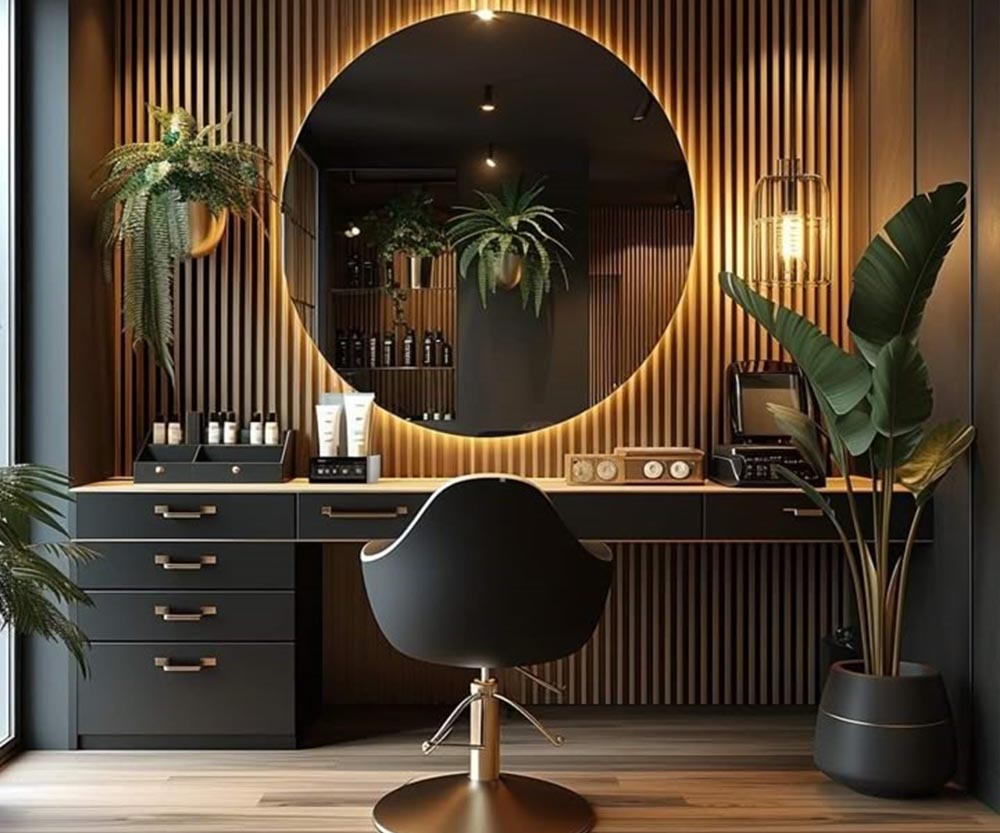
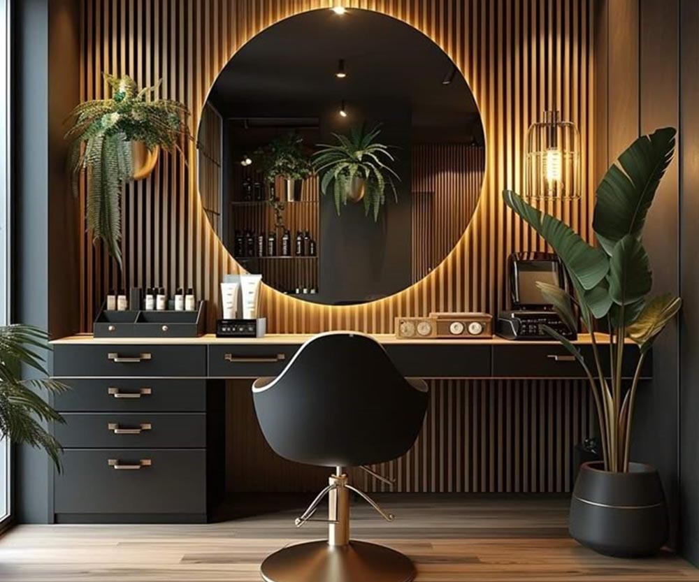
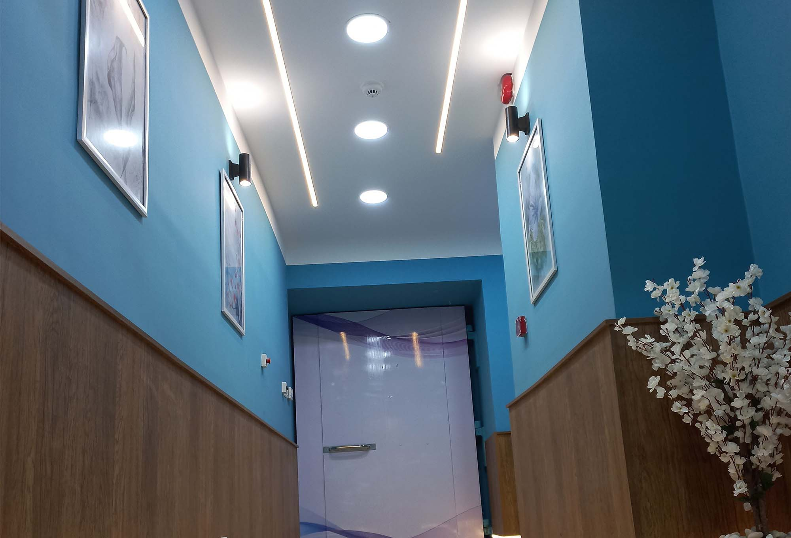
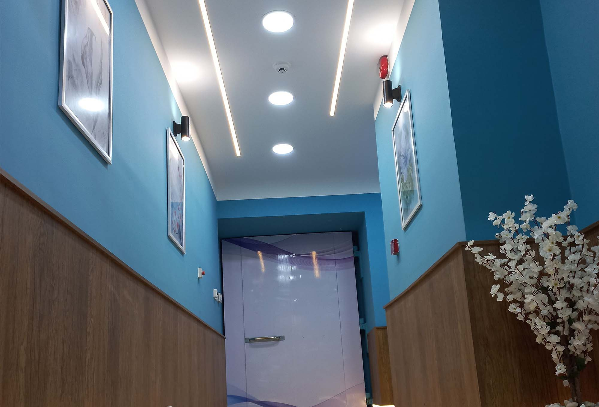
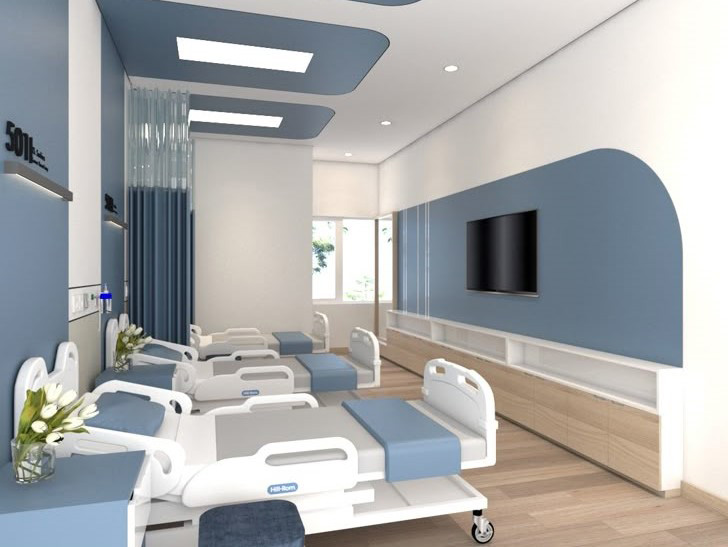
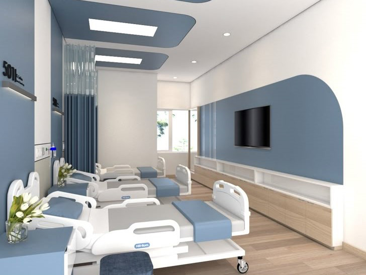
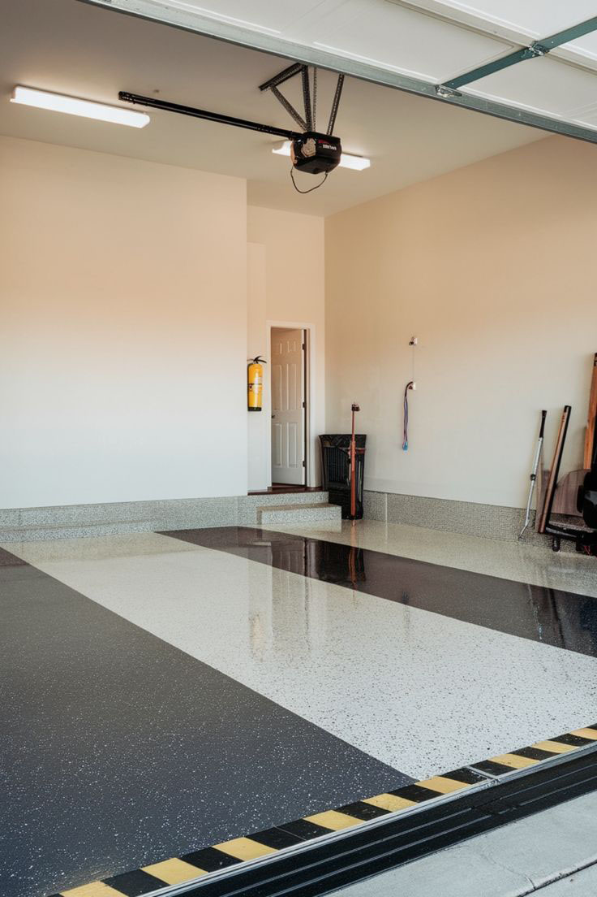
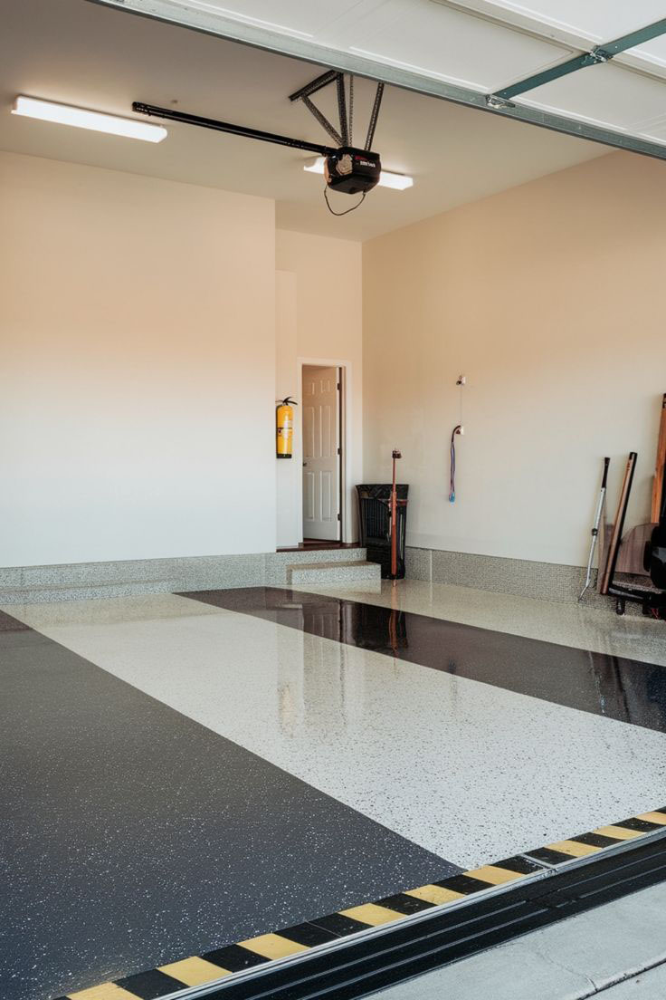
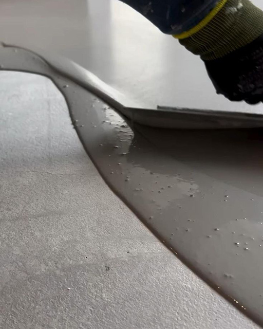
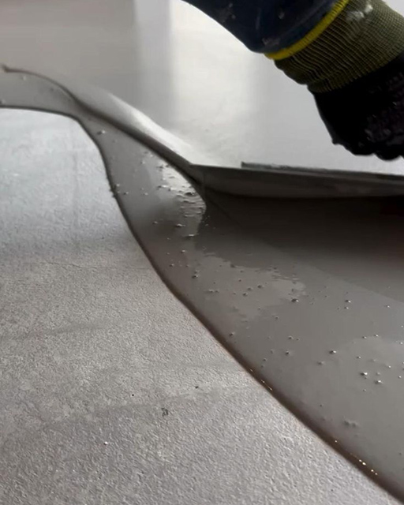

التشطيبات الداخلية
التشطيبات الداخلية هي المرحلة النهائية في أي مشروع بناء أو تجديد، وهي التي تمنح الفراغ طابعه النهائي وتأثيره الجمالي والوظيفي. تتضمن هذه المرحلة كل الأعمال التي تأتي بعد الهيكل الإنشائي للمبنى (مثل الأعمدة والجدران الخرسانية)، وتشمل مجموعة واسعة من العناصر مثل:
- الأسقف: مثل الأسقف الجبسية (الجيبسوم بورد) والأسقف المعلقة، والتي تُستخدم لإخفاء التمديدات الكهربائية والتكييف، وتوفر إضاءة مخفية جذابة.
- الجدران: ويتم التعامل معها عن طريق المحارة (اللياسة)، ثم الدهانات بأنواعها المختلفة، أو ورق الحائط، أو حتى ألواح الخشب، أو الحجر الطبيعي أو الصناعي.
- الأرضيات: وتشمل السيراميك، البورسلين، الرخام، الباركيه الخشبي، والـ HDF، كل نوع له مزاياه واستخداماته المناسبة.
- الإضاءة: تلعب الإضاءة دورًا محوريًا في إبراز جمال الديكور وتحديد الأجواء المختلفة للمكان. تشمل الإضاءة الرئيسية، الإضاءة المخفية، الإضاءة الموجهة، والثريات.
- الأبواب والنوافذ: يتم اختيارها وتصميمها لتتناسب مع الطراز العام للمكان.
- أعمال السباكة والكهرباء النهائية: مثل تركيب الخلاطات، الأدوات الصحية، والمفاتيح والمقابس الكهربائية.
باختصار، التشطيبات الداخلية هي التي تحوّل الفراغ المعماري من مجرد هيكل إلى مساحة معيشية أو عملية مريحة وجذابة.
الديكورات ثلاثية الأبعاد
الديكورات ثلاثية الأبعاد هي إحدى أحدث وأبرز صيحات التصميم الداخلي، وتعتمد على إضفاء عمق وحركة على الأسطح المسطحة (الجدران والأسقف). بدلاً من السطح الأملس التقليدي، تُستخدم مواد مُصممة خصيصًا لإنشاء أشكال بارزة وغائرة، مما يعطي إحساسًا بالحيوية والتفرد.
أبرز أنواعها واستخداماتها:
-
ألواح الجدران ثلاثية الأبعاد (3D Wall Panels):
- المواد: تُصنع غالبًا من الجبس، الألياف النباتية (Bambou)، PVC، أو الخشب.
- الشكل: تأتي على شكل بلاطات أو ألواح بمقاسات مختلفة تحمل نقوشًا هندسية أو عضوية بارزة.
- الاستخدام: تُستخدم عادة لتغطية جدار واحد (Wall Accent) في غرف المعيشة، خلف السرير في غرف النوم، أو في المداخل لإضافة نقطة بصرية محورية.
-
الأسقف ثلاثية الأبعاد:
يُمكن إنشاء تأثيرات ثلاثية الأبعاد في الأسقف باستخدام تصميمات الجبس بورد التي تتضمن مستويات مختلفة وأشكال هندسية معقدة، وغالبًا ما تُدمج مع الإضاءة المخفية لإبراز الأبعاد.
مميزات الديكورات ثلاثية الأبعاد:
- مظهر فريد وعصري: تمنح المكان طابعًا حديثًا ومتميزًا.
- إضافة عمق وحركة: تجعل المساحات تبدو أكثر حيوية وتكسر رتابة الجدران المسطحة.
- عزل صوتي وحراري: بعض أنواع هذه الألواح توفر خصائص عزل بسيطة.
- سهولة التركيب: العديد من أنواعها سهلة التركيب نسبيًا.
تُعد الديكورات ثلاثية الأبعاد خيارًا مثاليًا لمن يبحث عن لمسة فنية مبتكرة ومختلفة في تصميم منزله أو مكتبه.


 



التشطيبات الطبية
التشطيبات الطبية هي مجموعة من الأعمال النهائية التي تُنفذ في المنشآت الصحية مثل المستشفيات، العيادات، والمختبرات. تختلف هذه التشطيبات بشكل كبير عن التشطيبات العادية للمنازل أو المكاتب، لأنها تخضع لمعايير صارمة تهدف إلى تحقيق بيئة صحية، آمنة، ومعقمة. الهدف الأساسي هو مكافحة العدوى وتسهيل عمليات التعقيم والنظافة، بالإضافة إلى توفير بيئة مريحة للمرضى والعاملين.
أهم خصائص التشطيبات الطبية
- سهولة التنظيف والتعقيم: تُستخدم مواد غير مسامية ومقاومة للبقع والمواد الكيميائية. يجب أن تكون الأسطح ملساء وخالية من الزوايا الحادة أو الشقوق التي يمكن أن تتجمع فيها الجراثيم.
- مقاومة البكتيريا والفطريات: تُستخدم دهانات وأرضيات تحتوي على مواد مضادة للميكروبات، مما يمنع نمو البكتيريا والفطريات على الأسطح.
- مقاومة الحريق: تُفضل المواد المقاومة للحريق في جميع أجزاء المنشأة لضمان سلامة المرضى والعاملين.
- المتانة ومقاومة التآكل: يجب أن تتحمل التشطيبات الطبية الاستخدام المكثف، مرور المعدات الثقيلة، والتنظيف المتكرر دون أن تتلف.
- العزل الإشعاعي: يجب أن تعزل الجدران جيدًا بسمك كبير من الخرسانة المسلحة وبمادة الرصاص أو ما يماثلها لتجنب حدوث تسرب إشعاعي.
أمثلة على التشطيبات الطبية
- الأرضيات: تُستخدم أنواع خاصة من الأرضيات مثل أرضيات الفينيل الطبي (Medical Grade Vinyl Flooring) والإيبوكسي (Epoxy Flooring). هذه الأرضيات تكون ملحومة حراريًا لتكوين سطح واحد متصل، مما يمنع تسرب السوائل وتجمع البكتيريا. كما أنها تكون مضادة للانزلاق.
- الجدران: تُدهن الجدران بطلاءات خاصة مضادة للبكتيريا، أو تُغطى بألواح من الفينيل الطبي أو الفايبر جلاس (Fiberglass) لسهولة تنظيفها وتعقيمها. في بعض الأماكن مثل غرف العمليات، قد تُستخدم ألواح معدنية معالجة.
- الأسقف: يجب أن تكون الأسقف ناعمة وغير مسامية، وغالبًا ما تُستخدم ألواح من الجبس بورد المعالج أو ألواح معدنية معلقة لسهولة الوصول إلى التمديدات دون التسبب في تلوث.
- الأبواب والنوافذ: تُصنع من مواد غير قابلة للصدأ أو التآكل، وتكون محكمة الإغلاق لمنع دخول الغبار والحشرات. غالبًا ما تكون الأبواب في غرف العمليات أبوابًا أوتوماتيكية أو أبوابًا من الفولاذ المقاوم للصدأ.
- أنظمة التهوية والتكييف: تُصمم بطريقة خاصة لضمان تدفق الهواء النقي ومنع انتشار الملوثات، مع استخدام فلاتر HEPA عالية الكفاءة في المناطق الحساسة مثل غرف العمليات والعناية المركزة.
- الإضاءة: تُستخدم وحدات إضاءة مغلقة ومحكمة لمنع تراكم الغبار بداخلها، ويسهل تنظيفها وتعقيمها.


 


أبواب غرف العلاج الإشعاعي والأشعة
تُعد الأبواب الأوتوماتيكية لغرف العلاج الإشعاعي جزءًا حيويًا من أنظمة الأمان والحماية في المنشآت الطبية. هذه الأبواب مصممة خصيصًا لحماية العاملين والمرضى من مخاطر الإشعاع الضار، وتوفير بيئة عمل آمنة وفعالة.
المواصفات الأساسية
- مادة الحماية من الإشعاع: العنصر الأساسي هو الرصاص. يتم تبطين الأبواب بألواح من الرصاص بسماكة معينة تتناسب مع نوع وشدة الإشعاع في الغرفة، لمنع تسرب الأشعة السينية أو أشعة جاما.
- التصميم والآلية: غالبًا ما تكون هذه الأبواب من النوع المنزلق الأوتوماتيكي لتوفير المساحة، الكفاءة، وسهولة الاستخدام بسبب وزنها الثقيل الناتج عن طبقات الرصاص.
- الإغلاق المحكم: يجب أن تكون محكمة الإغلاق بالكامل دون فجوات لضمان عدم تسرب الإشعاع.
- نظام التحكم والأمان: تُجهز بأنظمة تحكم متقدمة للفتح والإغلاق عن بعد، ومستشعرات أمان لمنع الإغلاق على الأشخاص أو الأشياء.
- المتانة وسهولة التنظيف: تُصنع من مواد مثل الفولاذ المقاوم للصدأ لضمان مقاومتها للتآكل وسهولة تنظيفها وتعقيمها.
أنواع أبواب العلاج الإشعاعي
- الأبواب المنزلقة الأوتوماتيكية: الأكثر شيوعًا بسبب توفير المساحة والكفاءة.
- الأبواب المفصلية (Swinging Doors): تُستخدم في بعض الأحيان، لكنها تتطلب مساحة أكبر ومحركًا قويًا بسبب الوزن.
- الأبواب ذات الستارة الرصاصية (Lead Curtain Doors): تُستخدم في الحالات التي لا تتطلب حماية عالية، وتتكون من مواد مرنة تحتوي على الرصاص.
باختصار، الأبواب الأوتوماتيكية لغرف العلاج الإشعاعي ليست مجرد أبواب عادية، بل هي أنظمة أمان معقدة مصممة بعناية فائقة لضمان حماية الأرواح من مخاطر الإشعاع، وتُعد جزءًا لا يتجزأ من البنية التحتية لأي منشأة طبية متقدمة.


 



الأرضيات الإيبوكسية واليوريثان (يوريثان كونكريت)
الأرضيات الإيبوكسية واليوريثان (يوريثان كونكريت) هي حلول متطورة لمشاكل الأرضيات التقليدية في مختلف أنواع المنشآت، حيث توفر حماية فائقة ومتانة لا مثيل لها. تختلف هذه الأرضيات في خصائصها وتطبيقاتها لتناسب الاحتياجات المحددة لكل مكان، بدءًا من المستشفيات والمصانع وصولًا إلى الوحدات السكنية وغرف التجميد.
الأرضيات الإيبوكسية: الحل متعدد الاستخدامات
الأرضيات الإيبوكسية هي طبقات من مادة الراتنج (resin) يتم خلطها مع مادة مقوية لتكوين سطح صلب وغير مسامي. تُعرف هذه الأرضيات بمقاومتها العالية للمواد الكيميائية والتآكل، مما يجعلها مثالية للاستخدام في:
- المستشفيات والمنشآت الطبية: تُستخدم الأرضيات الإيبوكسية على نطاق واسع في غرف العمليات والممرات والمختبرات. سطحها الأملس وغير المسامي يمنع نمو البكتيريا والفطريات، ويسهل عمليات التنظيف والتعقيم، وهو أمر بالغ الأهمية للحفاظ على بيئة صحية.
- المصانع وورش العمل: في المصانع، تُستخدم الأرضيات الإيبوكسية لمقاومتها للأحمال الثقيلة وحركة الآلات، بالإضافة إلى حمايتها من الزيوت والمواد الكيميائية. كما يمكن تمييز مناطق معينة بألوان مختلفة لتعزيز السلامة وتنظيم العمل.
- الوحدات السكنية: يمكن استخدام الإيبوكسي في الجراجات والمطابخ والمساحات المفتوحة. يضيف لمسة عصرية وجمالية، مع توفير سطح متين وسهل الصيانة. تتيح الألوان والتصاميم المتنوعة إمكانيات غير محدودة للتخصيص.
أرضيات اليوريثان كونكريت (Ucrete): الحل الأمثل لظروف قاسية
أرضيات يوريثان كونكريت (Ucrete) هي نوع خاص من الأرضيات التي تجمع بين الراتنجات البوليمرية والملاط الأسمنتي. تُعرف هذه الأرضيات بقدرتها الفائقة على تحمل الظروف القاسية، مما يجعلها الخيار الأمثل للمناطق التي تتعرض لتقلبات درجات الحرارة الشديدة والصدمات الحرارية.
- أهم استخداماتها هو في غرف التجميد بالمصانع، حيث يمكن أن تتغير درجة الحرارة من -40 درجة مئوية إلى +120 درجة مئوية خلال عمليات التنظيف بالبخار.
- تتميز بمقاومة عالية للمواد الكيميائية والأحمال الميكانيكية، مما يجعلها لا غنى عنها في مصانع الأغذية والمشروبات والصناعات الدوائية.


 

 
